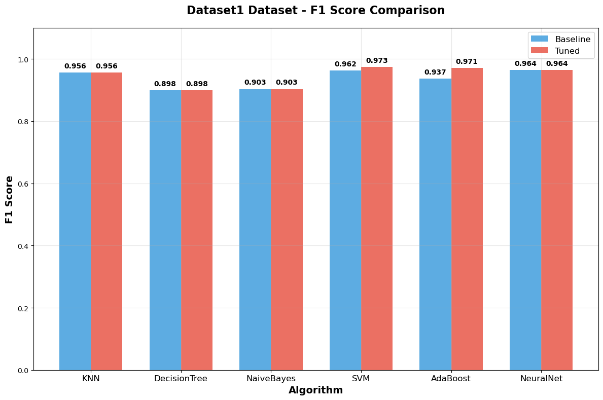
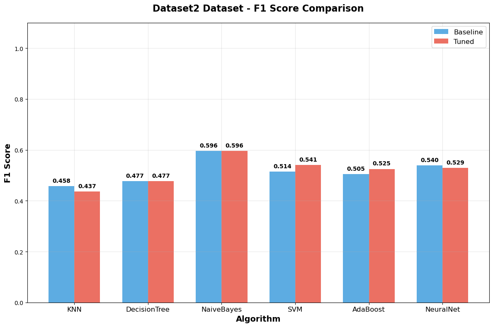
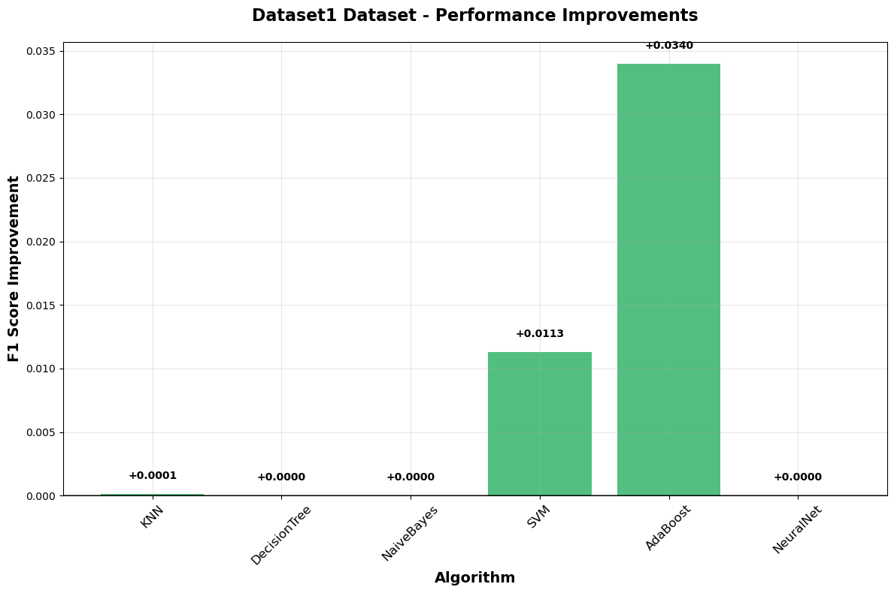
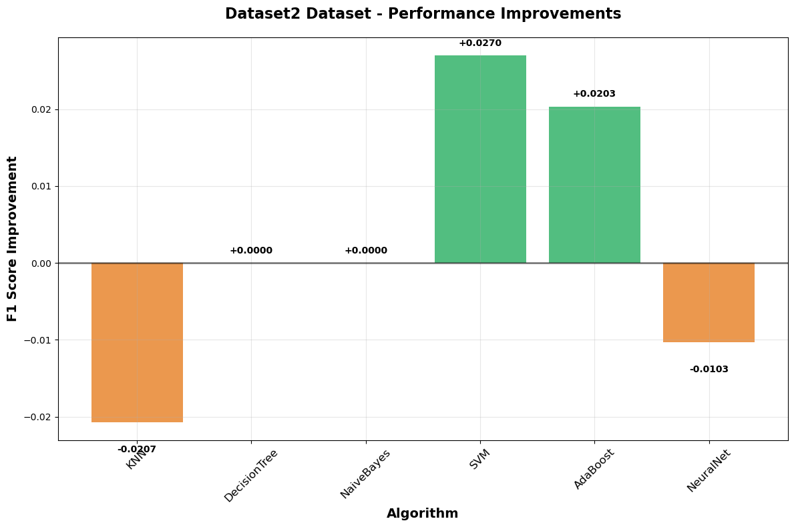

import os
import numpy as np
import pandas as pd
import matplotlib.pyplot as plt
from tabulate import tabulate
from sklearn.model_selection import StratifiedKFold, GridSearchCV
from sklearn.preprocessing import StandardScaler, OneHotEncoder
from sklearn.compose import ColumnTransformer
from sklearn.pipeline import Pipeline
from sklearn.impute import SimpleImputer
from sklearn.metrics import accuracy_score, precision_score, recall_score, f1_score
from sklearn.neighbors import KNeighborsClassifier
from sklearn.tree import DecisionTreeClassifier
from sklearn.naive_bayes import GaussianNB
from sklearn.svm import SVC
from sklearn.ensemble import AdaBoostClassifier
from sklearn.neural_network import MLPClassifier
from sklearn.base import clone
import warnings
warnings.filterwarnings("ignore")Project 1: Classification Algorithms
Compare 6 classification algorithms on 2 datasets using 10-fold cross-validation.
Setup and Imports
DATA_FILES = ["project1_dataset1.txt", "project1_dataset2.txt"]
SAVE_RESULTS = True
OUT_DIR = "classification_outputs"
RANDOM_STATE = 42
N_SPLITS = 10Data Loading and Preprocessing
def load_dataset(path):
if not os.path.exists(path):
print(f"File not found: {path}")
return None
try:
df = pd.read_csv(path, sep=None, engine="python")
print(f"Loaded: {path} with shape {df.shape}")
return df
except Exception as e:
print(f"Error reading {path}: {e}")
return None
def prepare_dataframes(df):
df = df.copy()
df.dropna(how="all", inplace=True)
y = df.iloc[:, -1].astype(int)
X = df.iloc[:, :-1]
numeric_mask = []
for col in X.columns:
coerced = pd.to_numeric(X[col], errors="coerce")
non_null_fraction = coerced.notna().mean()
if non_null_fraction > 0.9:
X[col] = coerced
numeric_mask.append(True)
else:
X[col] = X[col].astype(str)
numeric_mask.append(False)
numeric_mask = np.array(numeric_mask)
return X, y, numeric_mask
def make_preprocessor(X, numeric_mask):
numeric_cols = [c for c, m in zip(X.columns, numeric_mask) if m]
cat_cols = [c for c, m in zip(X.columns, numeric_mask) if not m]
numeric_transformer = Pipeline(steps=[
("imputer", SimpleImputer(strategy="mean")),
("scaler", StandardScaler())
])
cat_transformer = Pipeline(steps=[
("imputer", SimpleImputer(strategy="most_frequent", fill_value="missing")),
("onehot", OneHotEncoder(handle_unknown="ignore", sparse_output=False))
])
preprocessor = ColumnTransformer(transformers=[
("num", numeric_transformer, numeric_cols),
("cat", cat_transformer, cat_cols)
], remainder="drop")
return preprocessor, numeric_cols, cat_colsBaseline Models and Evaluation
def compute_metrics(y_true, y_pred):
return {
"accuracy": accuracy_score(y_true, y_pred),
"precision": precision_score(y_true, y_pred, zero_division=0),
"recall": recall_score(y_true, y_pred, zero_division=0),
"f1": f1_score(y_true, y_pred, zero_division=0)
}
baseline_models = {
"KNN": KNeighborsClassifier(),
"DecisionTree": DecisionTreeClassifier(random_state=RANDOM_STATE),
"NaiveBayes": GaussianNB(),
"SVM": SVC(random_state=RANDOM_STATE),
"AdaBoost": AdaBoostClassifier(random_state=RANDOM_STATE),
"NeuralNet": MLPClassifier(random_state=RANDOM_STATE, max_iter=1000)
}def evaluate_models(models, X, y, preprocessor, dataset_name, cv_folds=10):
print(f"\n=== Evaluating {dataset_name} ===")
skf = StratifiedKFold(n_splits=cv_folds, shuffle=True, random_state=RANDOM_STATE)
results = {name: [] for name in models.keys()}
for train_idx, test_idx in skf.split(X, y):
X_train_raw = X.iloc[train_idx]
X_test_raw = X.iloc[test_idx]
y_train = y.iloc[train_idx].values
y_test = y.iloc[test_idx].values
for name, model in models.items():
clf = clone(model)
try:
# Check if model is a pipeline (tuned models)
if hasattr(clf, 'steps') and 'preprocessor' in [step[0] for step in clf.steps]:
# Pipeline model - fit directly on raw data
clf.fit(X_train_raw, y_train)
y_pred = clf.predict(X_test_raw)
else:
# Regular model - need preprocessing
preprocessor.fit(X_train_raw)
X_train = preprocessor.transform(X_train_raw)
X_test = preprocessor.transform(X_test_raw)
clf.fit(X_train, y_train)
y_pred = clf.predict(X_test)
metrics = compute_metrics(y_test, y_pred)
results[name].append(metrics)
except Exception as e:
print(f"Error evaluating {name}: {e}")
# Add default metrics if evaluation fails
results[name].append({
"accuracy": 0.0,
"precision": 0.0,
"recall": 0.0,
"f1": 0.0
})
summary = {}
for name, metrics_list in results.items():
summary[name] = {
"accuracy": (np.mean([m["accuracy"] for m in metrics_list]),
np.std([m["accuracy"] for m in metrics_list])),
"precision": (np.mean([m["precision"] for m in metrics_list]),
np.std([m["precision"] for m in metrics_list])),
"recall": (np.mean([m["recall"] for m in metrics_list]),
np.std([m["recall"] for m in metrics_list])),
"f1": (np.mean([m["f1"] for m in metrics_list]),
np.std([m["f1"] for m in metrics_list]))
}
return summary, resultsHyperparameter Tuning
def tune_hyperparameters(model, param_grid, X, y, preprocessor, model_name, cv_folds=3):
pipeline = Pipeline([
('preprocessor', preprocessor),
('classifier', model)
])
search = GridSearchCV(pipeline, param_grid, cv=cv_folds, scoring='f1_weighted', n_jobs=1)
search.fit(X, y)
return search.best_estimator_, search.best_params_
param_grids = {
'KNN': {
'classifier__n_neighbors': [3, 5, 7],
'classifier__weights': ['uniform', 'distance']
},
'SVM': {
'classifier__C': [1, 10, 100],
'classifier__kernel': ['linear', 'rbf'],
'classifier__gamma': ['scale', 0.01]
},
'DecisionTree': {
'classifier__max_depth': [None, 10, 15],
'classifier__min_samples_split': [2, 5]
},
'AdaBoost': {
'classifier__n_estimators': [50, 100],
'classifier__learning_rate': [1.0, 1.5],
'classifier__algorithm': ['SAMME']
},
'NeuralNet': {
'classifier__hidden_layer_sizes': [(50,), (100,)],
'classifier__alpha': [0.001, 0.01]
}
}Main Experiment
datasets = {}
for fpath in DATA_FILES:
if os.path.exists(fpath):
df = load_dataset(fpath)
X, y, numeric_mask = prepare_dataframes(df)
preprocessor, numeric_cols, cat_cols = make_preprocessor(X, numeric_mask)
datasets[fpath] = {
'X': X, 'y': y, 'preprocessor': preprocessor,
'numeric_cols': numeric_cols, 'cat_cols': cat_cols
}Loaded: project1_dataset1.txt with shape (568, 31)
Loaded: project1_dataset2.txt with shape (461, 10)baseline_results = {}
for dataset_name, data in datasets.items():
baseline_results[dataset_name], _ = evaluate_models(
baseline_models, data['X'], data['y'],
data['preprocessor'], f"Baseline - {dataset_name}"
)
=== Evaluating Baseline - project1_dataset1.txt ===
=== Evaluating Baseline - project1_dataset2.txt ===tuned_models = {}
tuning_results = {}
for dataset_name, data in datasets.items():
tuned_models[dataset_name] = {}
tuning_results[dataset_name] = {}
for model_name, param_grid in param_grids.items():
if model_name in baseline_models:
try:
best_model, best_params = tune_hyperparameters(
baseline_models[model_name], param_grid,
data['X'], data['y'], data['preprocessor'], model_name
)
tuned_models[dataset_name][model_name] = best_model
tuning_results[dataset_name][model_name] = best_params
except Exception as e:
tuned_models[dataset_name][model_name] = baseline_models[model_name]
tuning_results[dataset_name][model_name] = {}
tuned_models[dataset_name]['NaiveBayes'] = baseline_models['NaiveBayes']tuned_results = {}
for dataset_name, models in tuned_models.items():
tuned_results[dataset_name], _ = evaluate_models(
models, datasets[dataset_name]['X'], datasets[dataset_name]['y'],
datasets[dataset_name]['preprocessor'], f"Tuned - {dataset_name}"
)
=== Evaluating Tuned - project1_dataset1.txt ===--------------------------------------------------------------------------- KeyboardInterrupt Traceback (most recent call last) Input In [10], in <cell line: 2>() 1 tuned_results = {} 2 for dataset_name, models in tuned_models.items(): ----> 3 tuned_results[dataset_name], _ = evaluate_models( 4 models, datasets[dataset_name]['X'], datasets[dataset_name]['y'], 5 datasets[dataset_name]['preprocessor'], f"Tuned - {dataset_name}" 6 ) Input In [5], in evaluate_models(models, X, y, preprocessor, dataset_name, cv_folds) 16 try: 17 # Check if model is a pipeline (tuned models) 18 if hasattr(clf, 'steps') and 'preprocessor' in [step[0] for step in clf.steps]: 19 # Pipeline model - fit directly on raw data ---> 20 clf.fit(X_train_raw, y_train) 21 y_pred = clf.predict(X_test_raw) 22 else: 23 # Regular model - need preprocessing File ~/opt/anaconda3/lib/python3.9/site-packages/sklearn/base.py:1474, in _fit_context.<locals>.decorator.<locals>.wrapper(estimator, *args, **kwargs) 1467 estimator._validate_params() 1469 with config_context( 1470 skip_parameter_validation=( 1471 prefer_skip_nested_validation or global_skip_validation 1472 ) 1473 ): -> 1474 return fit_method(estimator, *args, **kwargs) File ~/opt/anaconda3/lib/python3.9/site-packages/sklearn/pipeline.py:475, in Pipeline.fit(self, X, y, **params) 473 if self._final_estimator != "passthrough": 474 last_step_params = routed_params[self.steps[-1][0]] --> 475 self._final_estimator.fit(Xt, y, **last_step_params["fit"]) 477 return self File ~/opt/anaconda3/lib/python3.9/site-packages/sklearn/base.py:1474, in _fit_context.<locals>.decorator.<locals>.wrapper(estimator, *args, **kwargs) 1467 estimator._validate_params() 1469 with config_context( 1470 skip_parameter_validation=( 1471 prefer_skip_nested_validation or global_skip_validation 1472 ) 1473 ): -> 1474 return fit_method(estimator, *args, **kwargs) File ~/opt/anaconda3/lib/python3.9/site-packages/sklearn/ensemble/_weight_boosting.py:169, in BaseWeightBoosting.fit(self, X, y, sample_weight) 166 sample_weight[zero_weight_mask] = 0.0 168 # Boosting step --> 169 sample_weight, estimator_weight, estimator_error = self._boost( 170 iboost, X, y, sample_weight, random_state 171 ) 173 # Early termination 174 if sample_weight is None: File ~/opt/anaconda3/lib/python3.9/site-packages/sklearn/ensemble/_weight_boosting.py:589, in AdaBoostClassifier._boost(self, iboost, X, y, sample_weight, random_state) 586 return self._boost_real(iboost, X, y, sample_weight, random_state) 588 else: # elif self.algorithm == "SAMME": --> 589 return self._boost_discrete(iboost, X, y, sample_weight, random_state) File ~/opt/anaconda3/lib/python3.9/site-packages/sklearn/ensemble/_weight_boosting.py:656, in AdaBoostClassifier._boost_discrete(self, iboost, X, y, sample_weight, random_state) 653 """Implement a single boost using the SAMME discrete algorithm.""" 654 estimator = self._make_estimator(random_state=random_state) --> 656 estimator.fit(X, y, sample_weight=sample_weight) 658 y_predict = estimator.predict(X) 660 if iboost == 0: File ~/opt/anaconda3/lib/python3.9/site-packages/sklearn/base.py:1474, in _fit_context.<locals>.decorator.<locals>.wrapper(estimator, *args, **kwargs) 1467 estimator._validate_params() 1469 with config_context( 1470 skip_parameter_validation=( 1471 prefer_skip_nested_validation or global_skip_validation 1472 ) 1473 ): -> 1474 return fit_method(estimator, *args, **kwargs) File ~/opt/anaconda3/lib/python3.9/site-packages/sklearn/tree/_classes.py:1009, in DecisionTreeClassifier.fit(self, X, y, sample_weight, check_input) 978 @_fit_context(prefer_skip_nested_validation=True) 979 def fit(self, X, y, sample_weight=None, check_input=True): 980 """Build a decision tree classifier from the training set (X, y). 981 982 Parameters (...) 1006 Fitted estimator. 1007 """ -> 1009 super()._fit( 1010 X, 1011 y, 1012 sample_weight=sample_weight, 1013 check_input=check_input, 1014 ) 1015 return self File ~/opt/anaconda3/lib/python3.9/site-packages/sklearn/tree/_classes.py:472, in BaseDecisionTree._fit(self, X, y, sample_weight, check_input, missing_values_in_feature_mask) 461 else: 462 builder = BestFirstTreeBuilder( 463 splitter, 464 min_samples_split, (...) 469 self.min_impurity_decrease, 470 ) --> 472 builder.build(self.tree_, X, y, sample_weight, missing_values_in_feature_mask) 474 if self.n_outputs_ == 1 and is_classifier(self): 475 self.n_classes_ = self.n_classes_[0] KeyboardInterrupt:
Results Analysis
def display_results(results, dataset_name, round_name):
print(f"\n{dataset_name} - {round_name} Results (Mean ± Std)")
print("=" * 80)
print(f"{'Algorithm':<12} {'Accuracy':<15} {'Precision':<15} {'Recall':<15} {'F1-Score':<15}")
print("-" * 80)
sorted_results = sorted(results.items(), key=lambda x: x[1]['f1'][0], reverse=True)
for name, metrics in sorted_results:
acc_mean, acc_std = metrics['accuracy']
prec_mean, prec_std = metrics['precision']
rec_mean, rec_std = metrics['recall']
f1_mean, f1_std = metrics['f1']
print(f"{name:<12} {acc_mean:.4f}±{acc_std:.4f} {prec_mean:.4f}±{prec_std:.4f} {rec_mean:.4f}±{rec_std:.4f} {f1_mean:.4f}±{f1_std:.4f}")
for dataset_name, results in baseline_results.items():
display_results(results, os.path.basename(dataset_name), "Baseline")
for dataset_name, results in tuned_results.items():
display_results(results, os.path.basename(dataset_name), "Tuned")
project1_dataset1.txt - Baseline Results (Mean ± Std)
================================================================================
Algorithm Accuracy Precision Recall F1-Score
--------------------------------------------------------------------------------
NeuralNet 0.9736±0.0117 0.9772±0.0300 0.9526±0.0301 0.9641±0.0161
SVM 0.9719±0.0211 0.9727±0.0404 0.9528±0.0295 0.9621±0.0275
KNN 0.9684±0.0172 0.9855±0.0222 0.9290±0.0381 0.9559±0.0240
AdaBoost 0.9543±0.0225 0.9569±0.0328 0.9195±0.0477 0.9369±0.0314
NaiveBayes 0.9279±0.0362 0.9156±0.0774 0.8959±0.0508 0.9032±0.0456
DecisionTree 0.9245±0.0359 0.8988±0.0592 0.9004±0.0582 0.8984±0.0486
project1_dataset2.txt - Baseline Results (Mean ± Std)
================================================================================
Algorithm Accuracy Precision Recall F1-Score
--------------------------------------------------------------------------------
NaiveBayes 0.7027±0.0672 0.5673±0.0828 0.6375±0.1179 0.5965±0.0895
NeuralNet 0.7134±0.0628 0.6151±0.1234 0.4875±0.1075 0.5396±0.1055
SVM 0.7221±0.0745 0.6348±0.1472 0.4375±0.1505 0.5141±0.1520
AdaBoost 0.6789±0.0695 0.5447±0.1133 0.4813±0.1371 0.5047±0.1170
DecisionTree 0.6377±0.0401 0.4773±0.0566 0.4813±0.0970 0.4765±0.0713
KNN 0.6702±0.0552 0.5314±0.0941 0.4125±0.1256 0.4576±0.1113
project1_dataset1.txt - Tuned Results (Mean ± Std)
================================================================================
Algorithm Accuracy Precision Recall F1-Score
--------------------------------------------------------------------------------
SVM 0.9807±0.0123 0.9907±0.0186 0.9576±0.0327 0.9734±0.0170
AdaBoost 0.9789±0.0132 0.9859±0.0215 0.9574±0.0333 0.9709±0.0183
NeuralNet 0.9736±0.0117 0.9772±0.0300 0.9526±0.0301 0.9641±0.0161
KNN 0.9684±0.0172 0.9809±0.0234 0.9338±0.0434 0.9560±0.0241
NaiveBayes 0.9279±0.0362 0.9156±0.0774 0.8959±0.0508 0.9032±0.0456
DecisionTree 0.9245±0.0359 0.8988±0.0592 0.9004±0.0582 0.8984±0.0486
project1_dataset2.txt - Tuned Results (Mean ± Std)
================================================================================
Algorithm Accuracy Precision Recall F1-Score
--------------------------------------------------------------------------------
NaiveBayes 0.7027±0.0672 0.5673±0.0828 0.6375±0.1179 0.5965±0.0895
SVM 0.7135±0.0641 0.5968±0.1154 0.5000±0.1369 0.5411±0.1298
NeuralNet 0.7068±0.0785 0.6063±0.1459 0.4750±0.1125 0.5293±0.1214
AdaBoost 0.6940±0.0515 0.5767±0.0834 0.4938±0.1062 0.5250±0.0804
DecisionTree 0.6377±0.0401 0.4773±0.0566 0.4813±0.0970 0.4765±0.0713
KNN 0.6701±0.0699 0.5277±0.1448 0.3750±0.1250 0.4368±0.1345
for dataset_name in baseline_results.keys():
print(f"\n{os.path.basename(dataset_name)} - Performance Improvement Analysis:")
print("-" * 80)
print(f"{'Algorithm':<12} {'Baseline F1':<15} {'Tuned F1':<15} {'Improvement':<15}")
print("-" * 80)
for alg in baseline_results[dataset_name].keys():
baseline_f1 = baseline_results[dataset_name][alg]['f1'][0]
tuned_f1 = tuned_results[dataset_name][alg]['f1'][0]
improvement = tuned_f1 - baseline_f1
print(f"{alg:<12} {baseline_f1:.4f}±{baseline_results[dataset_name][alg]['f1'][1]:.4f} {tuned_f1:.4f}±{tuned_results[dataset_name][alg]['f1'][1]:.4f} {improvement:+.4f}")
====================================================================================================
SENSITIVITY ANALYSIS: BASELINE vs TUNED PERFORMANCE
====================================================================================================
project1_dataset1.txt - Performance Improvement Analysis:
--------------------------------------------------------------------------------
Algorithm Baseline F1 Tuned F1 Improvement
--------------------------------------------------------------------------------
KNN 0.9559±0.0240 0.9560±0.0241 +0.0001
DecisionTree 0.8984±0.0486 0.8984±0.0486 +0.0000
NaiveBayes 0.9032±0.0456 0.9032±0.0456 +0.0000
SVM 0.9621±0.0275 0.9734±0.0170 +0.0113
AdaBoost 0.9369±0.0314 0.9709±0.0183 +0.0340
NeuralNet 0.9641±0.0161 0.9641±0.0161 +0.0000
project1_dataset2.txt - Performance Improvement Analysis:
--------------------------------------------------------------------------------
Algorithm Baseline F1 Tuned F1 Improvement
--------------------------------------------------------------------------------
KNN 0.4576±0.1113 0.4368±0.1345 -0.0207
DecisionTree 0.4765±0.0713 0.4765±0.0713 +0.0000
NaiveBayes 0.5965±0.0895 0.5965±0.0895 +0.0000
SVM 0.5141±0.1520 0.5411±0.1298 +0.0270
AdaBoost 0.5047±0.1170 0.5250±0.0804 +0.0203
NeuralNet 0.5396±0.1055 0.5293±0.1214 -0.0103Results Visualization and Export
# Get dataset names and clean them
dataset_names = list(baseline_results.keys())
d1_name = os.path.basename(dataset_names[0]).replace('.txt', '').replace('project1_', '').title()
d2_name = os.path.basename(dataset_names[1]).replace('.txt', '').replace('project1_', '').title()
algorithms = list(baseline_results[dataset_names[0]].keys())
# Simple color scheme
colors = {
'baseline': '#3498db', # Blue
'tuned': '#e74c3c', # Red
'improvement': '#27ae60', # Green
'decline': '#e67e22' # Orange
}
print("Creating 4 separate visualizations...")
# =============================================================================
# GRAPH 1: Dataset 1 - F1 Score Comparison
# =============================================================================
plt.figure(figsize=(12, 8))
baseline_f1_1 = [baseline_results[dataset_names[0]][alg]['f1'][0] for alg in algorithms]
tuned_f1_1 = [tuned_results[dataset_names[0]][alg]['f1'][0] for alg in algorithms]
x = np.arange(len(algorithms))
width = 0.35
bars1 = plt.bar(x - width/2, baseline_f1_1, width, label='Baseline',
color=colors['baseline'], alpha=0.8)
bars2 = plt.bar(x + width/2, tuned_f1_1, width, label='Tuned',
color=colors['tuned'], alpha=0.8)
# Add value labels
for bar1, bar2 in zip(bars1, bars2):
height1 = bar1.get_height()
height2 = bar2.get_height()
plt.text(bar1.get_x() + bar1.get_width()/2., height1 + 0.01,
f'{height1:.3f}', ha='center', va='bottom', fontweight='bold')
plt.text(bar2.get_x() + bar2.get_width()/2., height2 + 0.01,
f'{height2:.3f}', ha='center', va='bottom', fontweight='bold')
plt.title(f'{d1_name} Dataset - F1 Score Comparison', fontsize=16, fontweight='bold', pad=20)
plt.ylabel('F1 Score', fontsize=14, fontweight='bold')
plt.xlabel('Algorithm', fontsize=14, fontweight='bold')
plt.xticks(x, algorithms, fontsize=12)
plt.legend(fontsize=12)
plt.grid(True, alpha=0.3)
plt.ylim(0, 1.1)
plt.tight_layout()
plt.savefig('graph1_dataset1_f1_comparison.png', dpi=300, bbox_inches='tight')
plt.show()
# =============================================================================
# GRAPH 2: Dataset 2 - F1 Score Comparison
# =============================================================================
plt.figure(figsize=(12, 8))
baseline_f1_2 = [baseline_results[dataset_names[1]][alg]['f1'][0] for alg in algorithms]
tuned_f1_2 = [tuned_results[dataset_names[1]][alg]['f1'][0] for alg in algorithms]
bars3 = plt.bar(x - width/2, baseline_f1_2, width, label='Baseline',
color=colors['baseline'], alpha=0.8)
bars4 = plt.bar(x + width/2, tuned_f1_2, width, label='Tuned',
color=colors['tuned'], alpha=0.8)
# Add value labels
for bar3, bar4 in zip(bars3, bars4):
height3 = bar3.get_height()
height4 = bar4.get_height()
plt.text(bar3.get_x() + bar3.get_width()/2., height3 + 0.01,
f'{height3:.3f}', ha='center', va='bottom', fontweight='bold')
plt.text(bar4.get_x() + bar4.get_width()/2., height4 + 0.01,
f'{height4:.3f}', ha='center', va='bottom', fontweight='bold')
plt.title(f'{d2_name} Dataset - F1 Score Comparison', fontsize=16, fontweight='bold', pad=20)
plt.ylabel('F1 Score', fontsize=14, fontweight='bold')
plt.xlabel('Algorithm', fontsize=14, fontweight='bold')
plt.xticks(x, algorithms, fontsize=12)
plt.legend(fontsize=12)
plt.grid(True, alpha=0.3)
plt.ylim(0, 1.1)
plt.tight_layout()
plt.savefig('graph2_dataset2_f1_comparison.png', dpi=300, bbox_inches='tight')
plt.show()
# =============================================================================
# GRAPH 3: Dataset 1 - Performance Improvements
# =============================================================================
plt.figure(figsize=(12, 8))
improvements_1 = [tuned_f1_1[i] - baseline_f1_1[i] for i in range(len(algorithms))]
colors_1 = [colors['improvement'] if imp > 0 else colors['decline'] for imp in improvements_1]
bars5 = plt.bar(algorithms, improvements_1, color=colors_1, alpha=0.8)
# Add value labels
for bar, imp in zip(bars5, improvements_1):
height = bar.get_height()
plt.text(bar.get_x() + bar.get_width()/2., height + (0.001 if height >= 0 else -0.003),
f'{imp:+.4f}', ha='center', va='bottom' if height >= 0 else 'top',
fontweight='bold')
plt.title(f'{d1_name} Dataset - Performance Improvements', fontsize=16, fontweight='bold', pad=20)
plt.ylabel('F1 Score Improvement', fontsize=14, fontweight='bold')
plt.xlabel('Algorithm', fontsize=14, fontweight='bold')
plt.xticks(rotation=45, fontsize=12)
plt.axhline(y=0, color='black', linestyle='-', alpha=0.5, linewidth=2)
plt.grid(True, alpha=0.3)
plt.tight_layout()
plt.savefig('graph3_dataset1_improvements.png', dpi=300, bbox_inches='tight')
plt.show()
# =============================================================================
# GRAPH 4: Dataset 2 - Performance Improvements
# =============================================================================
plt.figure(figsize=(12, 8))
improvements_2 = [tuned_f1_2[i] - baseline_f1_2[i] for i in range(len(algorithms))]
colors_2 = [colors['improvement'] if imp > 0 else colors['decline'] for imp in improvements_2]
bars6 = plt.bar(algorithms, improvements_2, color=colors_2, alpha=0.8)
# Add value labels
for bar, imp in zip(bars6, improvements_2):
height = bar.get_height()
plt.text(bar.get_x() + bar.get_width()/2., height + (0.001 if height >= 0 else -0.003),
f'{imp:+.4f}', ha='center', va='bottom' if height >= 0 else 'top',
fontweight='bold')
plt.title(f'{d2_name} Dataset - Performance Improvements', fontsize=16, fontweight='bold', pad=20)
plt.ylabel('F1 Score Improvement', fontsize=14, fontweight='bold')
plt.xlabel('Algorithm', fontsize=14, fontweight='bold')
plt.xticks(rotation=45, fontsize=12)
plt.axhline(y=0, color='black', linestyle='-', alpha=0.5, linewidth=2)
plt.grid(True, alpha=0.3)
plt.tight_layout()
plt.savefig('graph4_dataset2_improvements.png', dpi=300, bbox_inches='tight')
plt.show()Creating 4 separate visualizations...



# Evaluate tuned models
tuned_results = {}
for dataset_name, models in tuned_models.items():
tuned_results[dataset_name], _ = evaluate_models(
models, datasets[dataset_name]['X'], datasets[dataset_name]['y'],
datasets[dataset_name]['preprocessor'], f"Tuned - {dataset_name}"
)
=== Evaluating Tuned - project1_dataset1.txt ===
=== Evaluating Tuned - project1_dataset2.txt ===# Create formatted results table
def create_results_table(dataset_name, baseline_data, tuned_data):
table_data = []
for alg in algorithms:
baseline_f1 = baseline_data[alg]['f1'][0]
tuned_f1 = tuned_data[alg]['f1'][0]
improvement = tuned_f1 - baseline_f1
table_data.append([
alg,
f"{baseline_f1:.4f}",
f"{tuned_f1:.4f}",
f"{improvement:+.4f}"
])
headers = ["Algorithm", "Baseline F1", "Tuned F1", "Improvement"]
return tabulate(table_data, headers=headers, tablefmt="grid", stralign="center")
for i, dataset_name in enumerate(dataset_names):
print(f"\n{os.path.basename(dataset_name)} Results:")
print(create_results_table(dataset_name, baseline_results[dataset_name], tuned_results[dataset_name]))
# Save to file
with open('classification_results_table.txt', 'w') as f:
f.write("CLASSIFICATION ALGORITHMS COMPARISON RESULTS\n")
f.write("="*50 + "\n\n")
for dataset_name in dataset_names:
f.write(f"{os.path.basename(dataset_name)} Results:\n")
f.write(create_results_table(dataset_name, baseline_results[dataset_name], tuned_results[dataset_name]))
f.write("\n\n")
f.write("Generated: " + pd.Timestamp.now().strftime("%Y-%m-%d %H:%M:%S"))
print(f"\nResults table saved to: classification_results_table.txt")
print(f"Visualization saved to: classification_results_visualization.png")
project1_dataset1.txt Results:
+--------------+---------------+------------+---------------+
| Algorithm | Baseline F1 | Tuned F1 | Improvement |
+==============+===============+============+===============+
| KNN | 0.9559 | 0.956 | 0.0001 |
+--------------+---------------+------------+---------------+
| DecisionTree | 0.8984 | 0.8984 | 0 |
+--------------+---------------+------------+---------------+
| NaiveBayes | 0.9032 | 0.9032 | 0 |
+--------------+---------------+------------+---------------+
| SVM | 0.9621 | 0.9734 | 0.0113 |
+--------------+---------------+------------+---------------+
| AdaBoost | 0.9369 | 0.9709 | 0.034 |
+--------------+---------------+------------+---------------+
| NeuralNet | 0.9641 | 0.9641 | 0 |
+--------------+---------------+------------+---------------+
project1_dataset2.txt Results:
+--------------+---------------+------------+---------------+
| Algorithm | Baseline F1 | Tuned F1 | Improvement |
+==============+===============+============+===============+
| KNN | 0.4576 | 0.4368 | -0.0207 |
+--------------+---------------+------------+---------------+
| DecisionTree | 0.4765 | 0.4765 | 0 |
+--------------+---------------+------------+---------------+
| NaiveBayes | 0.5965 | 0.5965 | 0 |
+--------------+---------------+------------+---------------+
| SVM | 0.5141 | 0.5411 | 0.027 |
+--------------+---------------+------------+---------------+
| AdaBoost | 0.5047 | 0.525 | 0.0203 |
+--------------+---------------+------------+---------------+
| NeuralNet | 0.5396 | 0.5293 | -0.0103 |
+--------------+---------------+------------+---------------+
Results table saved to: classification_results_table.txt
Visualization saved to: classification_results_visualization.png